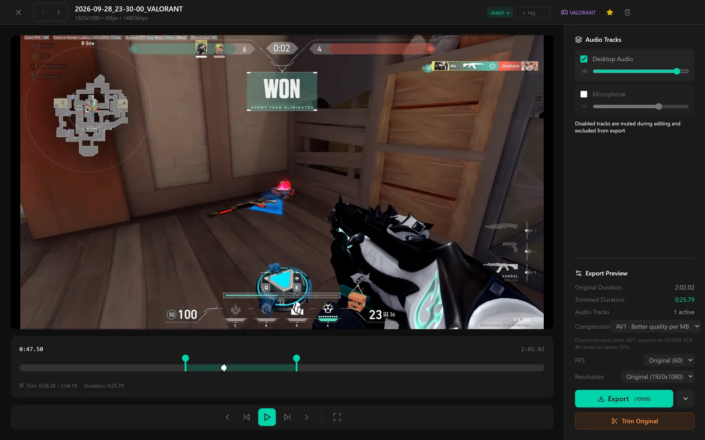

Separate game and mic tracks.
Game or desktop audio and your microphone are kept on two tracks in every clip. Drop your voice from a clip, or turn the game up, without re-recording anything.
- Two audio tracks in every clip
- Turn either track off before export
- Change each track’s volume
